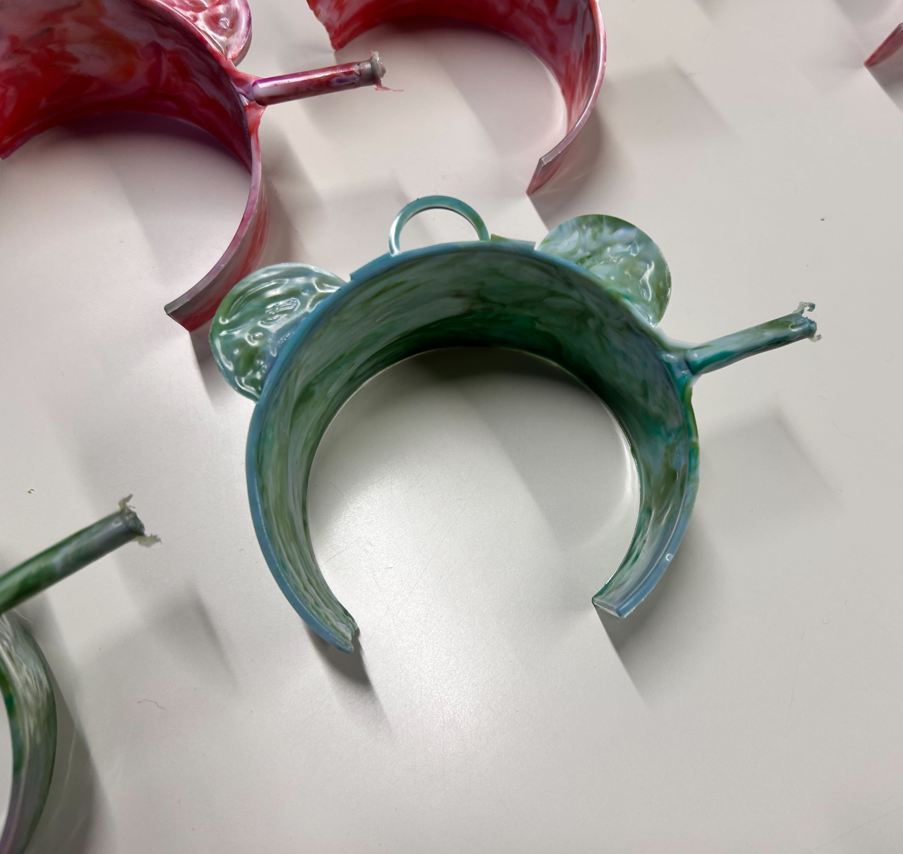

Menu
デザイン演習1・2
デジタルファブリケーション
デザイン演習3・4
デザイン演習5.6
ゼミ
Something else here
春休み
1
2
3
Essence of Challenge 2024
鎌倉共創プロジェクト
1
2
3
4
SONY MESH
1
2
3
4
サーキュラー
1
2
サーキュラープロジェクト
制作過程
グループメンバーで何を作るか話し合いました。
話し合いの結果、以下の3つを作ることにしました。
カップスリーブ（
ミル
担当）
花瓶（
LISA
担当）
ヘアクリップ（ミクモ担当）
発表
発表資料
実際に金型にするものとして、カップスリーブが選ばれました！
金型完成
金型を作っていただいたので、実際にカップスリーブを押し出してみました。

たくさん作りましたが、最後までプラスチックが行き届いたものは１つだけでした。
しかし、実際にプラスチックで作ってみるとカラフルでとてもかわいかったです！！
関連リンク
神奈川大学HP
TOPに戻る